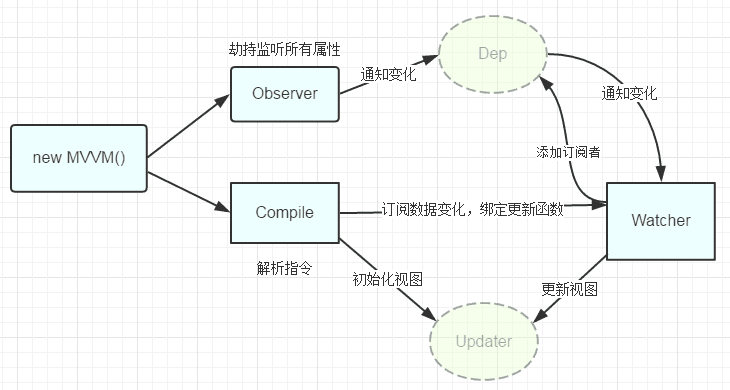

什么是MVVM？
MVVM定义：是Model-View-ViewModel（模型-视图-视图模型）的缩写；Model是数据模型，既后端传过来的数据；View是视图层，既我们看到的页面；而ViewModel是连接Model和View的中间桥梁，也就是说在MVVM的框架下，View和Model是不能直接通信的。它分为两个方向：一是将后端传过来的数据转化为我们看到的页面（数据模型转化为视图层），实现方式是数据绑定；二是将我们看到的页面转化为数据传到后端（视图层转化为数据模型），实现方式是DOM事件监听；将这两个方向都实现的，被称为双向传递。
MVVM的流程如下，ViewModel借助observer观察者，监控Model的数据变化，监听View的DOM节点。
Vue框架
Vue是基于MVVM模式实现的一套框架，在Vue中：Model:指的是js中的数据，如对象，数组等等；View:指的是页面视图；viewModel:指的是vue实例化对象。Vue最独特的特性：响应式系统。Vue是响应式的（reactive），也就是说当我们的数据变更时，Vue会帮你更新所有网页中用到它的地方。可以到官网查看。
数据双向绑定原理
Vue数据双向绑定原理用一句话可以简单概括：当我们把一个普通的 JavaScript 对象传入 Vue 实例作为 data 选项，Vue 将遍历此对象所有的属性，并使用 Object.defineProperty 把这些属性全部转为 getter/setter，它们让 Vue 能够追踪依赖，在属性被访问和修改时通知变更。

- 实现一个数据监听器Observer，能够对数据对象的所有属性进行监听，如有变动可拿到最新值并通知订阅者
- 实现一个指令解析器Compile，对每个元素节点的指令进行扫描和解析，根据指令模板替换数据，以及绑定相应的更新函数
- 实现一个Watcher，作为连接Observer和Compile的桥梁，能够订阅并收到每个属性变动的通知，执行指令绑定的相应回调函数，从而更新视图
- mvvm入口函数，整合以上三者
注意： 把一个普通对象传给 Vue 实例作为它的 data 选项，Vue.js 将遍历它的属性，用 Object.defineProperty 将它们转为 getter/setter。这是 ES5 特性，不能打补丁实现，这便是为什么 Vue.js 不支持 IE8 及更低版本。
var vm = new Vue({
data:{
a:1
}
})
// `vm.a` 是响应式的
vm.b = 2
// `vm.b` 是非响应式的